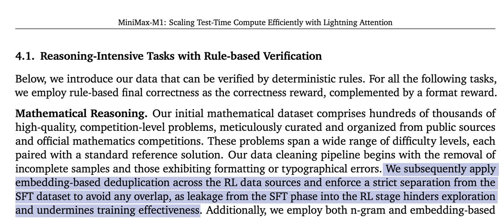

核心问题：这条推文在问什么
几个词先对齐
| 词 | 在这里的具体含义 | 为什么关键 |
|---|---|---|
| continual pretraining / mid-training | 基础模型之后继续做 next-token 训练，通常加入更高比例的推理、代码、STEM、长上下文或轨迹类语料。 | 它不是 RL，没有 reward，但会改变模型最自然会生成什么样的解题路径。 |
| RL rollouts / traces | 模型在任务上生成的完整轨迹：可能包含思考、工具调用、执行结果、修正和最终答案。 | 如果这些轨迹被提前放进 mid-training，模型可能已经“背熟”某些路径或风格。 |
| SFT cold start | RL 前用高质量示范答案教模型基本的长 CoT、格式、反思和答题习惯。 | 它让 RL 更稳定，但如果和 RL 题目/解法重叠，reward 会变得不再纯粹。 |
| exploration | RL 采样时尝试不同解法、搜索路线、工具调用和中间假设，而不是只走熟悉模板。 | 推理 RL 的收益通常来自在 reward 反馈下发现更好的策略，而不是重复已有文本。 |
原帖的隐含假设
作者把 MiniMax-M1 的 SFT/RL overlap 经验外推到更早、更大规模的 mid-training 阶段：如果 SFT 数据泄漏到 RL 会削弱探索，那么 trillions-token 级别的“轨迹类预训练”是否也会产生类似效果？更细的问题是：如果题目相同，但轨迹来自另一个模型，这算不算危险 overlap？
这个问题有价值，因为 2026 年的很多 agent / reasoning 训练路线都在做类似事情：先收集大量 trajectory corpus 做 mid-training，再用 RLVR、tool-use RL 或环境 reward 做强化。两者之间的边界越来越模糊。
术语解释：先把 overlap 拆清楚
Mid-training
这里指预训练之后、SFT/RL 之前的继续训练阶段。它通常仍用 next-token prediction，但数据更接近目标能力，例如长推理、代码编辑、工具轨迹或 agent 操作日志。
RL rollout
rollout 是模型在当前策略下真实采样出来的一条解题或操作轨迹。它包含中间思路、工具调用、环境反馈和最终答案，是 RL 用 reward 更新策略的基本样本。
Data overlap
overlap 不只等于文本完全重复。更危险的是语义重叠：同一题目、同一答案、同一解法骨架、同一工具状态，或高度相似的轨迹模式提前出现在 RL 前数据里。
探索空间
探索空间指模型在 RL 采样时愿意尝试的路线集合。如果 mid-training 已把模型强推向少数模板，RL 看到的样本会更集中，reward 就更难发现新策略。
机制拆解：为什么 overlap 可能伤害 RL
我的理解是，风险不在“文本出现过”本身，而在它改变了 RL 的探索分布、难度分布和 reward 信号含义。
但 overlap 也可能帮助 RL
不能把 overlap 简化成“有害”。如果模型完全不会长轨迹、不会工具调用、不会按环境状态行动，RL 会非常稀疏和昂贵。适度的 mid-training 可以教会模型基本动作语法：如何保持多步状态、如何调用工具、如何把失败反馈纳入下一步。这就是回复里有人说的“先有 reasoning space 的地图”：RL 不是从荒地开始，而是进入已有街区。
所以问题不在“是否要 trajectory-like mid-training”，而在它是否把后续 RL 要探索的任务、答案、轨迹模式提前泄漏得太具体。
MiniMax-M1 到底支持了什么
论文明确说了什么
MiniMax-M1 先在 7.5T tokens 的推理密集语料上继续预训练，然后做 SFT 注入长 CoT 模式，再做大规模 RL。论文 4.1 节在数学 RL 数据清洗里强调：RL 数据源之间做 embedding 去重，并与 SFT 数据严格隔离，理由是 SFT 到 RL 的泄漏会削弱探索和训练有效性。
同一篇论文还提到，在扩展到 80K 输出长度的 RL 时，他们会移除太容易的样本，并降低部分 synthetic reasoning data 的比例，因为这类数据在长上下文 RL 中会导致重复、同质化，对整体性能不利。
论文没有证明什么
截图不是一个系统 ablation。它没有给出“重叠多少会伤害多少”的曲线，也没有直接测试 trillion-token 级 continual pretraining 中，另一个模型生成的同题不同 rollout 是否伤害 RL。
因此，原帖作者是在提出合理外推，不是在引用一个已经封闭回答的问题。MiniMax-M1 提供的是工程经验和训练卫生原则，不是最终理论。
把 overlap 拆成四类，结论会清楚很多
| overlap 类型 | 例子 | 对 RL 的风险 | 我的判断 |
|---|---|---|---|
| prompt/问题重叠 | RL 题目在 SFT 或 mid-training 中出现过。 | 最高。模型可能直接识别题目，pass@1 虚高。 | 必须严格去重，至少做 exact、n-gram、embedding 和 benchmark contamination 检查。 |
| 答案/最终结果重叠 | 题目稍有改写，但答案或证明结构几乎一样。 | 很高。reward 无法区分真实求解和记忆式到达。 | 需要按语义和 solution skeleton 去重，仅 prompt 去重不够。 |
| 同题不同模型 rollout | 同一个数学题，mid-training 使用另一个模型生成的多条解法。 | 中到高。比直接答案泄漏弱，但会提供策略提示和路线先验。 | 如果目标是测 RL 能不能探索，应该隔离；如果目标是教动作语法，可放入非评测域。 |
| 风格/分布相似 | 大量长 CoT、工具调用、debug trace，但任务不同。 | 中等。通常有帮助，但可能造成模板化和同质化。 | 要看多样性、任务迁移和 OOD 表现，不应按 exact overlap 一刀切。 |
怎么判断它真的伤害了 RL
回复里有人问：这能否从 RL 期间异常高的 pass@1 看出来？答案是：可以作为警报，但不够。
| 诊断信号 | 怎么看 | 解释边界 |
|---|---|---|
| RL step 0 / early step pass@1 异常高 | RL 开始前或很早期已经能单次采样解决大量训练题。 | 可能是能力强，也可能是泄漏。需要与严格 holdout 同分布题比较。 |
| pass@N 与 pass@1 差距很小 | 多采样没有明显增加可解题数，说明策略多样性不足。 | 对简单题也会这样，所以要按难度分桶看。 |
| 训练题提升大，OOD 题提升小 | 同模板/同来源提升明显，跨来源、改写、组合任务收益弱。 | 这是最关键的风险信号，说明 RL 学到的可能是窄分布策略。 |
| 成功轨迹与 mid-training corpus 高相似 | 对 CoT、工具序列、关键中间式、代码 patch pattern 做 embedding/MinHash/AST 相似度检查。 | 相似不等于抄袭，但高相似加低 OOD 增益就是强证据。 |
| advantage 分布变窄 | 同一 prompt 下各 rollout reward 差别小，正负样本分布不够分离。 | RL 梯度会变弱，训练可能主要强化格式和长度偏好。 |
一个干净的实验设计
我的判断
如果 mid-training 的轨迹只是教会模型“怎么行动”，例如工具调用格式、长状态保持、错误恢复、任务分解语言，那么它通常是 RL 的加速器。如果它提前覆盖了 RL 要用来发现能力边界的题目、答案、解法路线或环境状态，那么它会把 RL 的探索问题变成记忆确认问题。
作者问的“T-token scale 会不会改变这个结论”，我的答案是：规模会稀释单条样本的记忆效应，但不会自动消除结构性泄漏。真正决定风险的是有效重复率、语义相似度、题目难度是否仍在模型能力边界上，以及后续 RL 是否有足够 OOD holdout 来检验泛化。
对训练 pipeline 来说，比较稳妥的做法是：mid-training 可以使用轨迹类语料，但 RL 任务池必须按 prompt、答案、轨迹、环境状态和 benchmark 来源做多层去重；RL 训练还要动态移除过易样本，保留能产生探索差异的边界题。MiniMax-M1 的数据清洗策略本质上就是这个方向。
边界说明：原帖是一个技术问题和假设，不是论文结果。MiniMax-M1 原文支持“严格隔离 SFT 与 RL 数据以避免泄漏伤害探索”的训练卫生原则，但没有直接回答所有 mid-training overlap 变体。
证据边界与资料索引
- X 原帖和回复：eliebakouch/status/2056511622529634703。原帖提出 mid-training 与 RL 数据重叠是否伤害探索的问题，并附带一张 MiniMax-M1 论文截图。
- 论文原文：MiniMax-M1: Scaling Test-Time Compute Efficiently with Lightning Attention。核对了 continual pretraining、SFT、RL 数据构造、去重和长输出 RL 训练段落。
- 官方技术页：MiniMax-M1 Technical Seminar。页面以图片为主，作为背景来源，具体 overlap 结论仍以 arXiv 原文为准。
